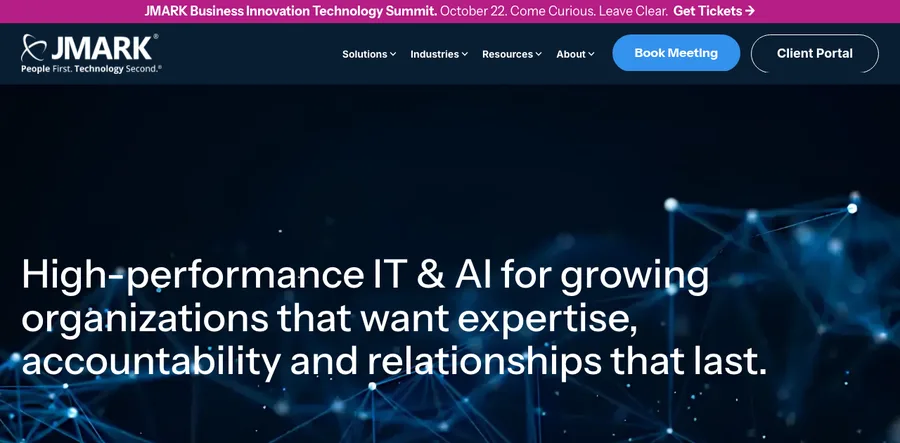
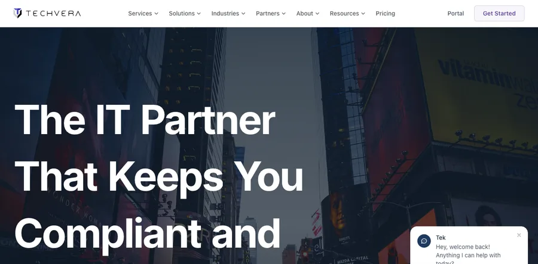
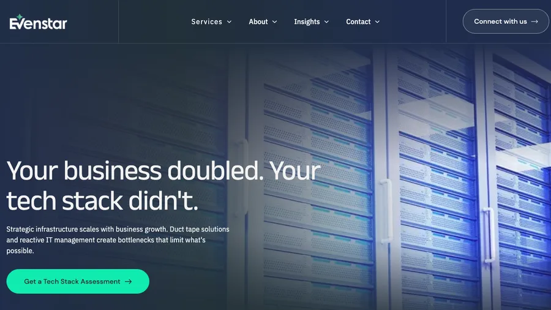
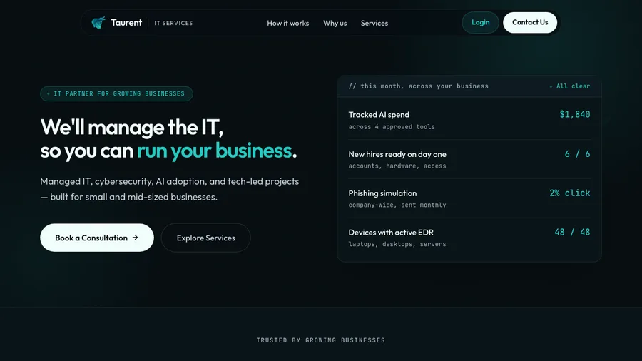
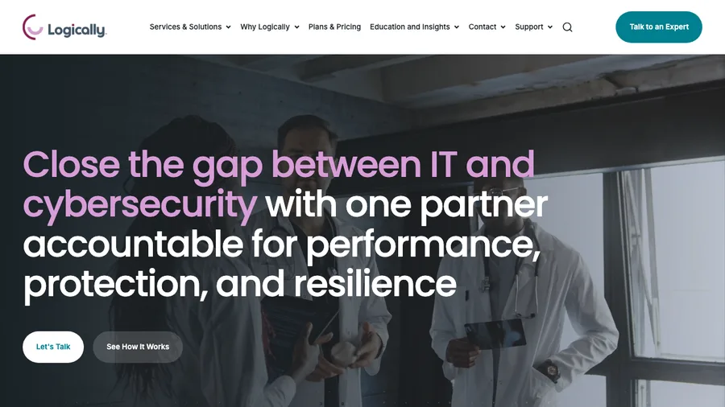
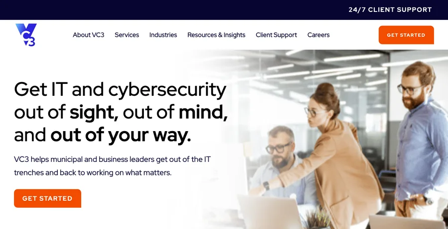
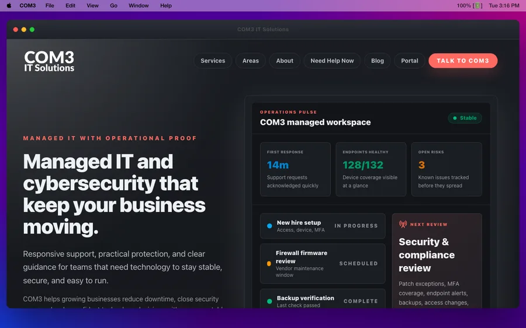
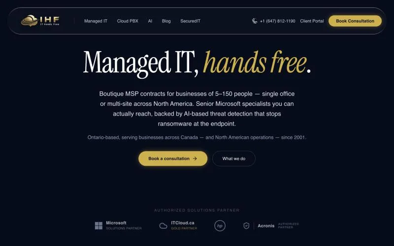
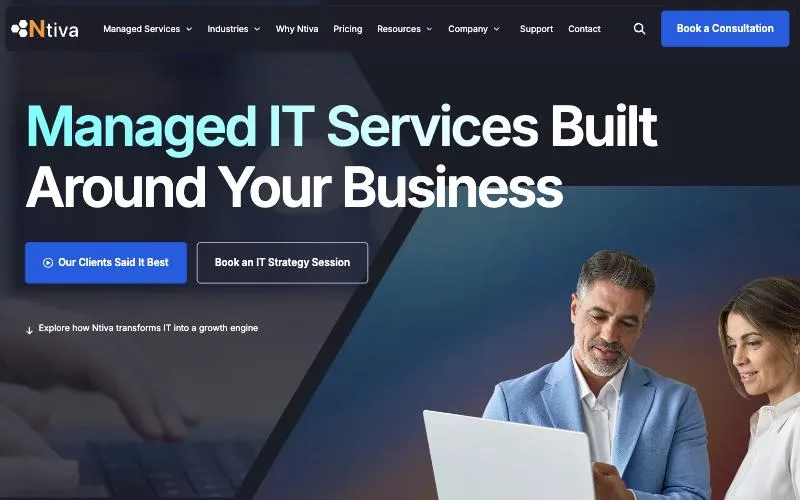
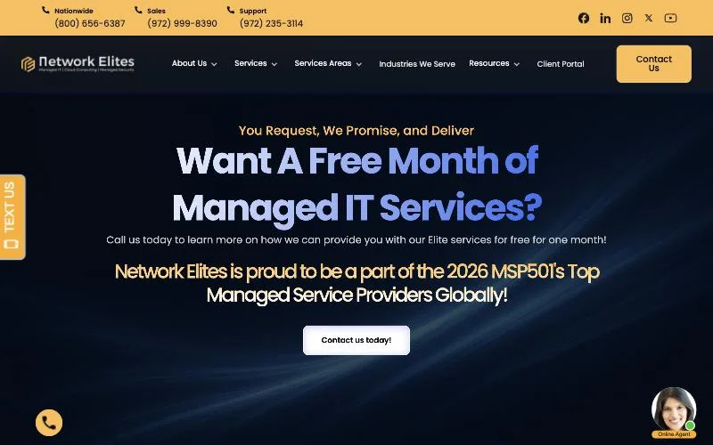

Most MSP websites look surprisingly similar.
You get the stock photo of someone staring at a laptop, a headline about “technology solutions,” a long list of IT services, and a button that says Learn More.
The problem is that none of that gives a prospective client much reason to choose one managed service provider over another.
The best MSP websites do something different. They make it immediately obvious who the MSP works with, what problems they solve, why they’re different, and what a prospect should do next.
We looked at 10 MSP websites that do an especially good job of positioning, conversion, trust-building, service presentation, or user experience. If you’d rather skip straight to having a site like this built for you, that’s exactly what our web design for MSPs service is built for.
Here are 10 of the best MSP website examples and what you can learn from each one.
Updated October 2026: we re-checked every site, swapped in fresh examples where a site had changed or gone offline, added screenshots, and added more MSP website examples at the end. Sites change often, so some details may look different by the time you visit.
How We Chose the Best MSP Website Examples
We’re not judging these websites purely on whether they look good.
A beautiful MSP website that doesn’t generate conversations isn’t doing its job.
Instead, we looked for several things that directly influence whether a website can turn traffic into qualified leads:
- Clear positioning: Can you tell within a few seconds who the MSP helps and why someone should choose them?
- Strong calls to action: Is there an obvious next step for someone who is interested?
- Specificity: Does the site communicate real outcomes instead of generic IT promises?
- Social proof: Are there case studies, testimonials, certifications, statistics, or other credibility signals?
- Service clarity: Can a non-technical buyer understand what the MSP actually provides?
- Industry targeting: Does the website speak directly to the types of companies the MSP wants to attract?
- Conversion design: Is the website structured to generate inquiries rather than simply describe the company?
- Differentiation: Does the site give prospects a reason to remember this MSP?
With that in mind, here are 10 MSP websites worth studying.
1. JMARK

JMARK is one of the strongest examples of an MSP website built around positioning rather than simply listing IT services.
Instead of trying to appeal to every business imaginable, the website communicates a much clearer message around high-performance IT for security-focused organizations.
That instantly gives the company more authority.
JMARK also does a particularly good job of segmenting its messaging by industry. A visitor doesn’t have to figure out whether the company’s services apply to their situation. They can quickly find content relevant to their specific type of business.
Another major strength is the use of real people throughout the website.
Many MSP websites rely almost entirely on generic stock photography. JMARK puts its actual team front and center, which makes the company feel considerably more established and trustworthy.
The site also backs up its positioning with numbers, proof, and detailed case studies showing actual business outcomes rather than vague customer praise.
What MSPs Can Learn From JMARK
- Build your homepage around a specific type of client or problem.
- Use real staff photography whenever possible.
- Segment important pages by industry.
- Replace vague claims with hard numbers.
- Build case studies around measurable business results.
Best feature: Strong positioning combined with unusually good proof.
2. Techvera

Techvera’s website is a great example of what an MSP homepage should look like when the primary objective is generating sales conversations.
There isn’t much ambiguity about what the visitor should do next.
The primary CTA—Schedule Your Strategy Session—is clear, specific, and repeated throughout the website.
That’s considerably stronger than generic buttons such as “Contact Us” or “Learn More.”
The homepage then supports that CTA with the things a cautious MSP buyer wants to see before scheduling a call: statistics, certifications, technology partnerships, customer testimonials, and service information.
Techvera also does a good job of showing that the company isn’t stuck selling the same IT package it offered ten years ago.
Alongside managed IT, cybersecurity, and compliance, the company addresses newer topics such as managed AI.
That helps position the business as a modern technology partner rather than a glorified help desk.
What MSPs Can Learn From Techvera
- Give your homepage one obvious primary CTA.
- Make the CTA describe what actually happens next.
- Put certifications and partner credibility near important conversion points.
- Show prospects that your services are evolving with technology.
- Use location-focused pages if local SEO is an important acquisition channel.
Best feature: A homepage clearly engineered around turning visitors into booked conversations.
3. Evenstar MSP

Evenstar MSP demonstrates just how valuable one strong line of copy can be.
Its headline:
“You’ll never be account #4,382 here.”
immediately gives visitors a reason to pay attention.
Instead of saying “Reliable Managed IT Services” or “Technology Solutions for Your Business,” Evenstar positions itself directly against large, impersonal MSPs.
The message is simple: if you’re tired of being treated like another ticket number by a giant provider, you’ll get more personal attention here.
That’s differentiation.
And differentiation is something most MSP websites desperately need.
The site leans into a boutique, local, relationship-driven approach rather than trying to appear like another enormous national technology provider.
For the right prospect, that message can be much more compelling than another list of cybersecurity tools and response-time promises.
What MSPs Can Learn From Evenstar
- Don’t be afraid to say who you’re different from.
- Use your hero headline to communicate your biggest differentiator.
- Personality can be more memorable than corporate IT language.
- Being smaller can be positioned as an advantage.
- Speak directly to frustrations prospects have with competing MSPs.
Best feature: One of the clearest examples of differentiation through copy.
4. Taurent IT Services

Taurent IT Services has one of the more interesting visual approaches to MSP website design.
Rather than making the website feel like a traditional IT company, Taurent gives it more of a modern SaaS-style interface.
More importantly, the site makes managed IT tangible.
Visitors can see concepts such as:
- Devices protected
- New hires onboarded
- AI spending monitored
- Phishing results
- Security activity
- Operational IT metrics
This is important because managed IT is an inherently difficult service to visualize.
Businesses are essentially paying an MSP every month to prevent problems, maintain systems, improve security, and respond when something goes wrong.
Taurent does a good job of showing what that work actually looks like.
Instead of selling an abstract promise of “proactive IT management,” the website demonstrates concrete activities and outcomes.
What MSPs Can Learn From Taurent IT Services
- Visualize what your service actually does.
- Show outcomes instead of simply naming tools.
- Treat your managed service like a product.
- Use dashboards, numbers, timelines, or process visuals to make invisible work visible.
- Modern MSP sites don’t have to look like traditional IT company websites.
Best feature: Turning an abstract managed service into something prospects can actually see.
5. Viti Security
Viti Security stands out for something most MSPs are afraid to put on their websites: pricing.
The company makes it easier for prospects to understand the available packages, what is included, endpoint limitations, expected response times, and where additional charges may apply.
That transparency removes a major source of friction.
A typical MSP prospect has no idea whether managed IT is going to cost $500 per month, $2,500 per month, or $10,000 per month.
Making pricing more visible can help prospects self-qualify before they ever schedule a meeting.
Viti also keeps its language relatively straightforward.
Instead of burying buyers underneath acronyms and technical terminology, the website explains what they’re purchasing in language a business owner can actually understand.
What MSPs Can Learn From Viti Security
- Consider showing pricing or at least starting price ranges.
- Tell prospects exactly what’s included.
- Explain important exclusions before the sales call.
- Make service-level expectations easy to understand.
- Write for business owners, not network engineers.
Best feature: Excellent transparency around what clients are actually buying.
6. Logically

Logically is a good example of what happens when an MSP picks one clear idea and builds the whole homepage around it.
The headline:
“Close the gap between IT and cybersecurity with one partner accountable for performance, protection, and resilience.”
That’s a positioning statement, not a list of services.
It tells a buyer who is tired of vendors blaming each other exactly what they get: one team that owns both IT and security.
The proof backs it up where it counts. The homepage shows numbers like 98.9% customer satisfaction, 3,000+ customers, and 100K+ endpoints managed, plus credentials like SOC 2 and PCI DSS Level 1 service provider status.
Pricing isn’t hidden either. “Plans & Pricing” sits right in the main navigation, which is still unusual in this industry.
The hero also gives visitors two paths: Let’s Talk for people ready to start a conversation, and See How It Works for people who want to understand first.
What MSPs Can Learn From Logically
- Lead with one idea you can own, not a list of services.
- Put your numbers and certifications on the homepage, not three clicks deep.
- Give cautious buyers a lower-pressure option next to your main CTA.
- Make pricing easy to find, even if you only show starting points.
- Show the industries you serve, like financial services, healthcare, and higher education.
Best feature: One accountable partner for IT and security, stated in the headline.
If you run a security-first MSP or MSSP, this kind of positioning is exactly what we build into our marketing for cybersecurity companies and MSSPs.
7. VC3

VC3 shows how much a strong headline can do when you serve a very specific kind of customer.
The headline:
“Get IT and cybersecurity out of sight, out of mind, and out of your way.”
The line underneath names the audience directly: municipal and business leaders.
That’s an unusual pairing, and that’s the point. VC3 says out loud who it’s for.
The homepage then leans on proof: an 86% average reduction in IT incidents, 96% client satisfaction, and an average client relationship of more than 11 years.
Named testimonials sit next to those numbers, from places like a children’s hospital, a police department, and city governments.
A 24/7 Client Support link sits in the header, so both clients and prospects see responsiveness right away.
What MSPs Can Learn From VC3
- Say who you serve in the first line under your headline.
- Pair your numbers with named, recognizable clients.
- Use outcome stats, like incident reduction, alongside satisfaction scores.
- Show long client tenure as proof that you keep the clients you win.
- Keep one clear primary CTA in the header and the hero.
Best feature: A sector-specific audience stated right in the hero.
8. Highgate IT
Highgate IT demonstrates how much stronger a case study becomes when you show the actual transformation.
Many MSP case studies aren’t really case studies at all.
They’re testimonials.
“We’ve worked with XYZ IT for five years and they’re fantastic!”
That’s nice, but it doesn’t explain what the MSP actually accomplished.
Highgate’s approach is much stronger because the customer stories provide context around the situation, the problem that needed to be solved, and the resulting transformation.
That makes the value of the service much easier for prospective customers to understand.
The website also uses statistics to establish credibility and scale early, helping answer questions about how established the company is and how much experience it has.
What MSPs Can Learn From Highgate IT
- Structure case studies around problem → solution → result.
- Use business outcomes rather than generic praise.
- Put impressive operating statistics near the top of your website.
- Give prospects evidence before asking them to contact you.
- Turn successful clients into detailed sales assets.
Best feature: Case studies that actually explain the business impact of the MSP’s work.
9. COM3 IT Solutions

COM3 IT Solutions does something that more MSP websites should copy:
It shows prospects what managed IT actually looks like operationally.
Instead of simply saying things like “proactive monitoring” and “industry-leading support,” the site communicates the kinds of things an MSP is actually managing, including:
- Response times
- Endpoint health
- Open risks
- User onboarding
- Backup verification
- Audit evidence
That makes the value proposition much more concrete.
This matters because one of the biggest marketing problems MSPs face is that clients don’t always understand what they’re paying for when everything is working correctly.
A website that demonstrates the ongoing work happening behind the scenes makes the monthly managed services fee easier to understand and justify.
What MSPs Can Learn From COM3 IT Solutions
- Show what’s happening behind the scenes.
- Visualize proactive support rather than simply claiming it exists.
- Explain what clients receive every month.
- Turn technical activity into understandable business information.
- Make invisible work visible.
Best feature: A concrete representation of how managed IT operates day to day.
10. IT Hands Free

IT Hands Free makes its target customer unusually clear.
Rather than trying to appeal to every organization from two employees to 20,000, the company positions itself as a boutique MSP for businesses with roughly 5–150 employees.
That immediately helps the right prospect self-identify.
The website also explains geographic coverage, which is especially useful for businesses wondering whether onsite support is available.
Another strong element is expectation-setting around the sales process.
Prospects get a clearer idea of what will happen after they submit a form and who they’re likely to speak with.
The company emphasizes access to senior specialists rather than making clients feel like they’re going to disappear into a massive support queue.
Combined, those elements make the business feel much more approachable.
What MSPs Can Learn From IT Hands Free
- State your ideal customer size directly.
- Explain where you provide service.
- Tell prospects what happens after they contact you.
- Turn senior-level access into a selling point.
- Don’t try to make your MSP look bigger than it needs to be.
Best feature: Extremely clear boutique MSP positioning.
More MSP Website Examples Worth Studying
These two didn’t make the main 10, but both are strong MSP website examples with ideas worth borrowing.
Ntiva

Ntiva’s hero does two jobs. The headline, “Managed IT Services Built Around Your Business,” is plain and benefit-led.
The two buttons next to it split visitors by readiness: Book an IT Strategy Session for buyers who are ready, and Our Clients Said It Best for buyers who want proof first.
That testimonial section includes a construction company owner who says a ransomware attack shut his business down for a week and cost over $200,000. It’s the kind of story a prospect remembers.
Ntiva also lists nine industry verticals with their own pages, including law firms, healthcare, dental practices, and government contractors.
Takeaway: Give ready buyers and cautious buyers their own button.
Network Elites

Network Elites is the opposite of minimalist, and that’s on purpose. The site is built to make contacting them as easy as possible.
The top bar shows three phone numbers: nationwide, sales, and support. A Text Us tab, an online agent chat bubble, and a call button all sit on the screen.
The headline is an offer, not a slogan: “Want A Free Month of Managed IT Services?”
Right below it is a third-party credential, a spot on the 2026 MSP501 list of top managed service providers, and the page backs that up with numbers like 300+ five-star reviews and an initial response time under 15 minutes.
Takeaway: Make every way to contact you obvious, and lead with an offer instead of a tagline.
Want a site built around the same patterns as these MSP website examples?
See Our MSP Web DesignWeb Design for MSPsWhat the Best MSP Websites Have in Common
These 10 websites look different, but several patterns appear repeatedly.
And they’re worth paying attention to if you’re redesigning your own MSP website.
1. They Don’t Try to Sell “IT”
The weakest MSP websites focus almost entirely on services: managed IT, cloud, cybersecurity, Microsoft 365, backup, VoIP.
Those things matter, but they’re rarely the reason a prospect chooses one MSP over another.
The stronger websites sell outcomes:
- Less downtime
- Better security
- Easier onboarding
- Faster support
- Compliance
- Predictable IT spending
- Reduced business risk
- Access to senior expertise
Your services explain how you create the result. They shouldn’t be the entire value proposition.
2. Their Positioning Is Specific
Evenstar targets prospects who don’t want to become another account number.
IT Hands Free explicitly speaks to smaller businesses.
Logically brings IT and cybersecurity together under one accountable partner.
JMARK leans heavily into security-focused industries.
The more clearly you define who you’re best suited to help, the easier it becomes for those prospects to recognize themselves on your website.
Trying to appeal to everybody usually creates generic messaging that appeals strongly to nobody.
3. They Make Managed IT Tangible
One of the most interesting trends across these sites is the effort to visualize the actual work being performed.
Taurent shows operational outcomes. COM3 shows endpoint health, backup verification, risks, and response times. Viti makes packages and service levels easier to understand.
This solves a major MSP marketing problem.
Prospects can’t physically see proactive IT support.
Your website therefore needs to help them understand what’s happening behind the scenes.
4. They Use Real Proof
The strongest MSP websites don’t rely on statements like “We put our customers first.”
Every MSP says that.
Instead, they prove credibility with:
- Case studies
- Customer outcomes
- Client logos
- Certifications
- Response statistics
- Years in business
- Industries supported
- Customer counts
- Real staff photos
- Testimonials
Specific proof beats generic promises.
5. Their CTAs Tell Visitors What Happens Next
Compare Learn More with Schedule Your Strategy Session.
The second tells the visitor exactly what they’re doing.
Your primary CTA doesn’t necessarily need to say “Book a Call,” but it should remove uncertainty.
Other strong MSP CTA examples could include:
- “Schedule an IT Strategy Call”
- “Get Your IT Assessment”
- “Talk With an IT Specialist”
- “Request a Cybersecurity Review”
- “See If We’re a Fit”
Your visitor should never have to guess what clicking the button will do.
6. They Speak Like Their Customers
Your prospects generally aren’t searching for a provider because they desperately want “an integrated next-generation technology ecosystem.”
They want employees to stop complaining about IT. They want someone to answer support tickets. They want ransomware protection. They need Cyber Insurance requirements handled. They’re opening another office and don’t want the transition to become a disaster. They need someone to manage Microsoft 365. They want predictable costs.
Talk about those problems. Technical expertise should support your messaging, not bury it.
What Should an MSP Website Include?
If you’re building or redesigning an MSP website, you don’t need to copy any of these websites section for section.
You do, however, need to answer the core questions every potential client has.
A strong MSP homepage should usually communicate:
Who You Help
Be specific about company size, location, industry, or business type whenever possible.
What You Solve
Focus on business problems before technical features.
Why You’re Different
Give prospects a reason to choose you instead of the other 20 MSPs they’re evaluating.
Your Core Services
Managed IT, cybersecurity, cloud, compliance, backup, and other services should still be easy to find.
Proof
Show reviews, customer logos, case studies, certifications, statistics, and actual results.
What Working With You Looks Like
Explain your onboarding process and what happens after someone becomes a client.
A Clear Next Step
Give visitors one obvious action to take.
The Biggest Mistake MSP Websites Make
The biggest problem with most MSP websites isn’t bad design.
It’s generic positioning.
You could often take the logo off one MSP website, replace it with another company’s logo, and almost nothing else would need to change.
That’s a problem.
Your website should answer this question almost immediately:
Why should a business choose your MSP instead of another MSP in the same market?
Maybe you specialize in law firms. Maybe your average response time is four minutes. Maybe clients speak directly to senior engineers. Maybe you only serve companies with 25–200 employees. Maybe you’ve developed an exceptional onboarding process. Maybe you specialize in CMMC. Maybe you guarantee something competitors don’t.
Whatever it is, make that part of the website.
Don’t hide your strongest differentiator halfway down your About page.
Final Thoughts
The best MSP websites aren’t necessarily the websites with the most animations, the most expensive photography, or the most complicated designs.
They’re the ones that make buying easier.
They tell prospects:
You’re in the right place. We understand your problem. Here’s how we solve it. Here’s proof we’ve done it before. Here’s what you should do next.
If your MSP website can accomplish those five things clearly, you’re already ahead of a large portion of the market.
And if you’re investing in SEO, Google Ads, LinkedIn, YouTube, or any other lead-generation channel, improving the website becomes even more important.
Because getting more traffic to a website that doesn’t convert just means paying to lose prospects faster.
At MSP Sprout, we focus on helping MSPs build marketing systems that generate qualified managed IT opportunities—not just traffic, impressions, and rankings. Your website should be one of the strongest sales assets in that system, which is exactly what our web design for MSPs service is built to deliver.
Want a website built around the same patterns as the sites above? We’d be happy to walk you through it.
Schedule a Growth CallTalk to a Web Design Specialist